よみこみ中…
その 1
850
/ 2000
しゅつげき
オート OFF
ひっさつ
オート OFF
‹
›
合戦を はじめる ▶
うごきを 見る
顔で しゅつげき！ 「ひっさつ」の武将をタップ 戦場は 自動追従・左右にスワイプ
おやすみ
合戦を つづける ▶
もういちど ↻
しゅつげき オート OFF
ひっさつ オート OFF
あそびかた
ホームへ
スマホを よこにして あそんでね
もういちど あそぶ ↻
ホームへ
前進 → 攻撃の うごきを かくにん
ようかいを 見る
とめる Ⅱ
合戦にもどる
✦
✦
✦
まなんで、なかまを あつめよう。
小学3〜6年生むけ
はじめる
▶
あそびかた
スマホを くるっと
よこむきにすると
あそべるよ
画面を よこにしてね
かわらないときは、スマホの
「画面の向きのロック」を はずしてね